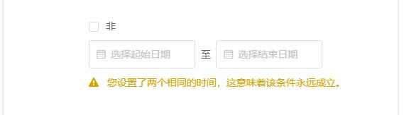

快速入门
欢迎
什么是 校园铃声自动播放系统 ？
这不仅仅是一款为中小学校播音工作室打造的一款可自动播放铃声、音乐的一款软件，您还可以将其用于其他需要自动执行或播放音乐的工作。
精心打造的重要功能:
- 可根据您的要求自动进行播放音乐、执行任务
- 可根据您的作息时间表来添加自动播放任务
- 可根据您的时间表可按星期、按时间等条件自动播放
- 可根据您的作息时间表进行季节切换，例如夏令时、冬令时
- 可对每一个任务进行精细化控制，例如播放时长，音量，循环次数等等
本篇帮助文档将帮助您快速入门 自动播放系统。
硬件需求
- 运行 Windows 7 或以上系统的一台 PC
- PC 存在声卡，以及您的播音工作室存在播音设备
- PC 支持自动开机（可选）
许可证
查看许可证
基本操作
基本概念
要使用 校园铃声自动播放系统 ，您必须了解以下一些基础概念：
-
时令 :
时令是一个根据季节(日期)进行控制的，进行不同时间表的播放，它包含了许多个子时间表，例如，在学校中，
夏天使用一套时间表，冬天使用另外一套时间表（通常称之为“夏令时”、“冬令时”），此时，您就可以使用时令进行控制。
-
时间表 :
一个记录了许多任务的表格，可以设置这个表格在那一天播放，表格中记录了一些任务，什么时候开始播放什么音乐，以及播放状态等等。
我们将时间表附属于时令，你可以通过时令来控制应该播放什么时间表。
-
任务 :
在某个时间播放音乐或执行操作的一条任务。您可以精细化管理播放音乐或执行操作。
-
播放条件 :
它被加在时间表或任务上，可以是一个时间点，可以是一个日期，通常用来控制时间表或任务在什么时候，什么条件下播放。
根据实际需要进行组织
通常学校会指定一张作息时间表，要求我们广播工作室按规定播放铃声，如下图（这是作者学校的作息时间表）：
您可以根据此表格来确定软件数据，告诉软件在什么时间播放什么铃声。
以下是如何将纸质表格转为软件播放数据的分析方法 (需要您手动输入数据) ：
- 首先可以看到有两种时间，一种是春冬，一种是夏秋，所以，我们可以添加两个时令，一个在 5/1-11/3 播放，另一个在 11/4-4/30 播放，这样就可以在规定的日期内播放指定的时令了。
- 在春冬、夏秋时令下添加时间表，春冬时间表内添加具体任务，任务设置春冬的时间；夏秋时间表内添加具体任务，任务设置夏秋的时间。
- 确定您的学校要求播放的铃声，比如上课铃、下课铃等等，并将文件存放在某个不易丢失的位置（或是本软件下musics目录里），稍后使用。
- 根据对应时间，在时间表添加对应任务，比如几点几分播放上课铃，几点几分播放下课铃等等。
- 保存数据，此时软件就开始工作了，将本软件最小化，您可以放心离开。
如此，您便可以使软件按照您的时间表进行定时播放铃声。
相同的，对于您学校的作息时间表，也可以使用此方法进行分析。
下面显示的是具体的软件操作方法：
主界面操作方法
添加编辑时令
此对话框用来编辑时令的属性与基本信息。
- 时令播放时间：时令支持自动选择播放，您可以设置一个日期范围来自动控制时令是否播放。
- 限制年份：日期范围是否精确限制年份，如果不限年份，那么每年的指定日期都会满足条件。
- 不限时间：时令是否永远播放，如果您希望时令永远处于播放状态，可勾选此项。
- 是否启用：您可以禁用时令，这样它将不会被自动播放。
添加编辑时间表
此对话框用来编辑时间表的属性与基本信息。
-
播放条件播放条件是用来控制时间表的自动播放的。例如，作者的学校在周五会提早放学回家，所以周五
下午的铃声时间有所不同，需要一个新的时间表单独在周五播放，即可设置该时间表播放条件为周五。
播放条件以 “与” 的方式进行判断，也就是说必须所有条件都满足时间表才会播放。
使时间表永远处于播放状态：如果您不希望限制时间表的自动播放，可勾选此项。
- 是否启用：您可以禁用时间表，这样它将不会被自动播放。
添加编辑播放条件
此对话框用来编辑播放条件的属性。
播放条件可以来控制 时间表 或 任务 的自动播放，分为 “时间”、“日期”、“星期”、“日期区间”、“星期区间” 5 种类型。
非：反向条件，勾选后当前播放条件变成 非满足才成立。
是否启用：您可以禁用播放条件，这样此条件不会被计算入结果来控制 时间表 或 任务 。
条件类型：
-
时间
一个时间点的条件
-
日期
一个日期点的条件
-
星期
一个星期点的条件
-
日期区间

从一个时间点至另一个时间点的条件
限制年份：日期范围是否精确限制年份，如果不限年份，那么每年的指定日期都会满足条件。
-
星期区间
从星期几至星期几的条件
添加编辑任务
此对话框用来编辑任务的属性。
定时任务，可执行 “播放音乐”、“执行命令”、“关闭计算机” 3 种操作。
播放条件：计算一些条件，如果条件满足，将会控制任务开始播放。
停止条件：计算一些条件，如果条件满足并且任务还未播放完备，将会控制任务停止播放。
播放、停止条件以 “与” 的方式进行判断，也就是说必须所有条件都满足才成立。
请注意：对于播放条件或停止条件，其中必须要有一个精确的时间条件作为主条件进行判断 (例如 06:00:00) ，否则条件永远不成立。
是否启用：您可以禁用任务，这样它将不会被自动播放。
任务操作：
-
播放音乐
您可以添加多个音乐条目，本软件将会按照顺序进行播放。但必须保证音乐文件存在或可以播放，
因为播放错误会导致当前任务终止。
本软件支持的音乐 :
音乐循环次数：您可以设置此任务的音乐循环播放次数，为 0 次或 1 次不循环，如果此任务有多条音乐，则每条音乐都会循环播放您指定的次数。
音乐音量：您可以设置此任务音乐播放的音量，也可以使用默认音量，使用默认音量则以您设置的系统音量为准。
音乐限制播放时间：您可以限制播此任务音乐播放的总时间，如果音乐播放时间超过您设定的时间并且音乐还未播放完成，将会强制停止任务和音乐的播放。
音乐开始时间：您可以设置此任务音乐开始播放的位置，但仅仅在本任务只有一个音乐时才有效。
-
执行命令
本软件可根据您输入的命令来执行其他程序，您输入的命令将会由 CMD 按顺序执行，因此要求您事先测试，保证命令正确。
您还可以启动 按键精灵 的命令脚本，来实现自动定时控制其他程序 了解更多。
-
关闭计算机
此任务执行关闭计算机的任务。
音乐播放器
在有音乐播放时，界面右下角会出现一个音乐条，您可以点击进行音乐播放控制，也可以点击右边按钮隐藏播放控件。
您可以点击音乐条控制此音乐的播放，与普通播放器无异。
高级操作
数据安全
导入导出数据
使用本软件定时运行命令或开启其他软件
其他
常见问题
THE END